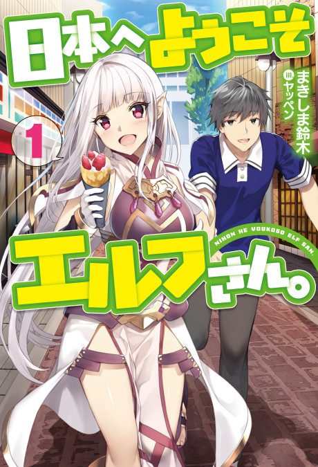
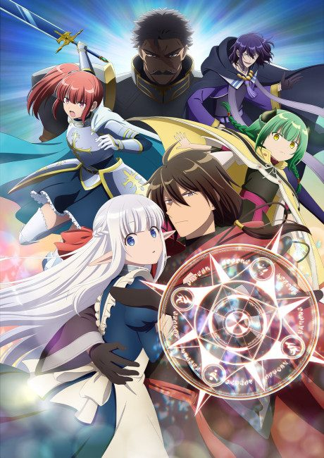

Welcome to Japan, Ms. Elf!
日本へようこそエルフさん。
After the anime, read the light novel from Volume 4.
7.2AniList score
—Animeter, no votes yet
12episodes
Is it worth pushing through?
Built from what visitors report across all 12 episodes.
Loading reports…Checking what other people said about this one.
Sign in above with your email to add your report.
More like Welcome to Japan, Ms. Elf!
 Manga Ch. 487.4
Manga Ch. 487.4
 Unclear7.5
Unclear7.5

Unclear7.3 Unclear8.4
Unclear8.4
 Unclear7.3
Unclear7.3
 Not checked6.9
Not checked6.9